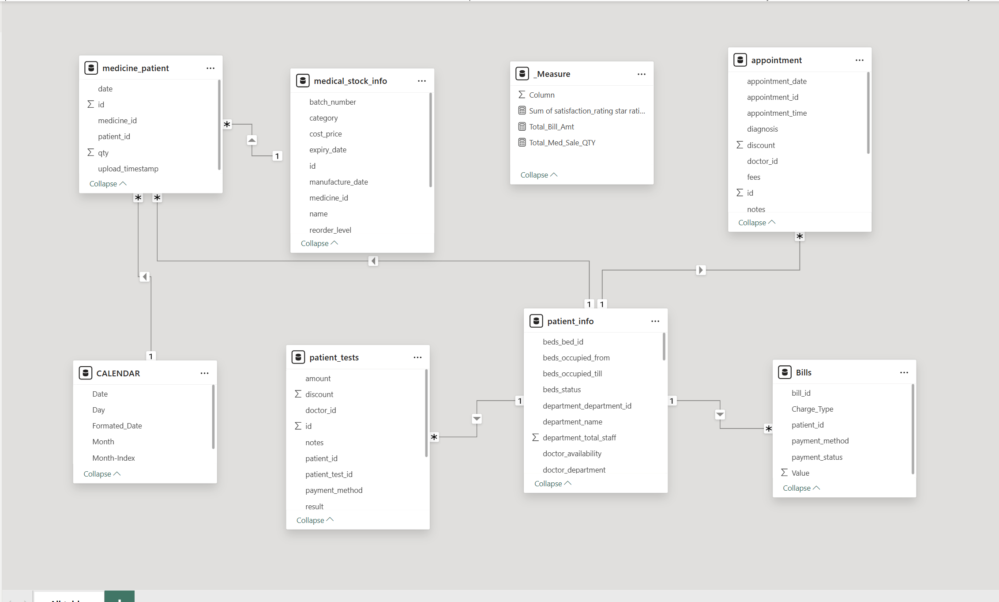
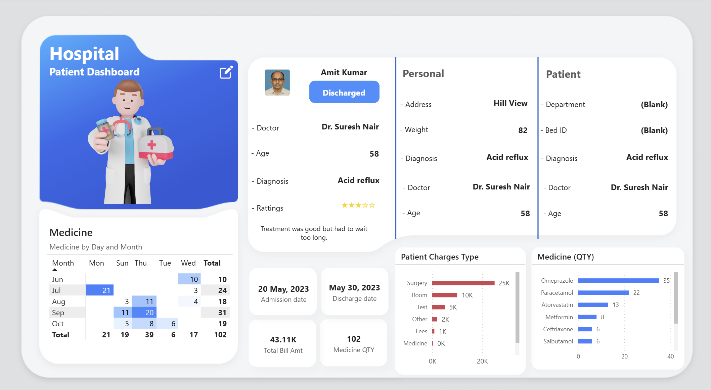

Healthcare Analytics • Data Modeling
Modern healthcare facilities generate massive amounts of Electronic Health Records (EHR). Doctors and administrators often struggle to get a quick, comprehensive overview of an individual patient's medical journey. The objective of this project was to build a robust data model and design a centralized Patient Dashboard that consolidates clinical and financial data.

Before building visuals, a solid foundation was required. I designed a relational data model (Star Schema approach) to connect fragmented hospital systems.

The final Power BI dashboard provides an immersive, holistic profile for each patient, aiding clinical decisions.